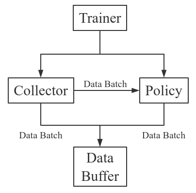

Basic concepts in Tianshou¶
Tianshou splits a Reinforcement Learning agent training procedure into these parts: trainer, collector, policy, and data buffer. The general control flow can be described as:
{kind=link}
Here is a more detailed description, where Env is the environment and Model is the neural network:
{kind=link}
Batch¶
Tianshou provides Batch as the internal data structure to pass any kind of data to other methods, for example, a collector gives a Batch to policy for learning. Let’s take a look at this script:
>>> import torch, numpy as np
>>> from tianshou.data import Batch
>>> data = Batch(a=4, b=[5, 5], c='2312312', d=('a', -2, -3))
>>> # the list will automatically be converted to numpy array
>>> data.b
array([5, 5])
>>> data.b = np.array([3, 4, 5])
>>> print(data)
Batch(
a: 4,
b: array([3, 4, 5]),
c: '2312312',
d: array(['a', '-2', '-3'], dtype=object),
)
>>> data = Batch(obs={'index': np.zeros((2, 3))}, act=torch.zeros((2, 2)))
>>> data[:, 1] += 6
>>> print(data[-1])
Batch(
obs: Batch(
index: array([0., 6., 0.]),
),
act: tensor([0., 6.]),
)
In short, you can define a Batch with any key-value pair, and perform some common operations over it.
Understand Batch is a dedicated tutorial for Batch. We strongly recommend every user to read it so as to correctly understand and use Batch.
Buffer¶
ReplayBuffer stores data generated from interaction between the policy and environment. ReplayBuffer can be considered as a specialized form (or management) of Batch. It stores all the data in a batch with circular-queue style.
The current implementation of Tianshou typically use the following reserved keys in
Batch:
obsthe observation of step \(t\) ;actthe action of step \(t\) ;rewthe reward of step \(t\) ;terminatedthe terminated flag of step \(t\) ;truncatedthe truncated flag of step \(t\) ;donethe done flag of step \(t\) (can be inferred asterminated or truncated);obs_nextthe observation of step \(t+1\) ;infothe info of step \(t\) (ingym.Env, theenv.step()function returns 4 arguments, and the last one isinfo);policythe data computed by policy in step \(t\);
When adding data to a replay buffer, the done flag will be inferred automatically from terminated``and ``truncated.
The following code snippet illustrates the usage, including:
the basic data storage:
add();get attribute, get slicing data, …;
sample from buffer:
sample_indices(batch_size)andsample(batch_size);get previous/next transition index within episodes:
prev(index)andnext(index);save/load data from buffer: pickle and HDF5;
>>> import pickle, numpy as np
>>> from tianshou.data import Batch, ReplayBuffer
>>> buf = ReplayBuffer(size=20)
>>> for i in range(3):
... buf.add(Batch(obs=i, act=i, rew=i, terminated=0, truncated=0, obs_next=i + 1, info={}))
>>> buf.obs
# since we set size = 20, len(buf.obs) == 20.
array([0, 1, 2, 0, 0, 0, 0, 0, 0, 0, 0, 0, 0, 0, 0, 0, 0, 0, 0, 0])
>>> # but there are only three valid items, so len(buf) == 3.
>>> len(buf)
3
>>> # save to file "buf.pkl"
>>> pickle.dump(buf, open('buf.pkl', 'wb'))
>>> # save to HDF5 file
>>> buf.save_hdf5('buf.hdf5')
>>> buf2 = ReplayBuffer(size=10)
>>> for i in range(15):
... terminated = i % 4 == 0
... buf2.add(Batch(obs=i, act=i, rew=i, terminated=terminated, truncated=False, obs_next=i + 1, info={}))
>>> len(buf2)
10
>>> buf2.obs
# since its size = 10, it only stores the last 10 steps' result.
array([10, 11, 12, 13, 14, 5, 6, 7, 8, 9])
>>> # move buf2's result into buf (meanwhile keep it chronologically)
>>> buf.update(buf2)
>>> buf.obs
array([ 0, 1, 2, 5, 6, 7, 8, 9, 10, 11, 12, 13, 14, 0, 0, 0,
0, 0, 0, 0])
>>> # get all available index by using batch_size = 0
>>> indices = buf.sample_indices(0)
>>> indices
array([ 0, 1, 2, 3, 4, 5, 6, 7, 8, 9, 10, 11, 12])
>>> # get one step previous/next transition
>>> buf.prev(indices)
array([ 0, 0, 1, 2, 3, 4, 5, 7, 7, 8, 9, 11, 11])
>>> buf.next(indices)
array([ 1, 2, 3, 4, 5, 6, 6, 8, 9, 10, 10, 12, 12])
>>> # get a random sample from buffer
>>> # the batch_data is equal to buf[indices].
>>> batch_data, indices = buf.sample(batch_size=4)
>>> batch_data.obs == buf[indices].obs
array([ True, True, True, True])
>>> len(buf)
13
>>> buf = pickle.load(open('buf.pkl', 'rb')) # load from "buf.pkl"
>>> len(buf)
3
>>> # load complete buffer from HDF5 file
>>> buf = ReplayBuffer.load_hdf5('buf.hdf5')
>>> len(buf)
3
ReplayBuffer also supports frame_stack sampling (typically for RNN usage, see issue#19), ignoring storing the next observation (save memory in Atari tasks), and multi-modal observation (see issue#38):
Advance usage of ReplayBuffer
>>> buf = ReplayBuffer(size=9, stack_num=4, ignore_obs_next=True)
>>> for i in range(16):
... terminated = i % 5 == 0
... ptr, ep_rew, ep_len, ep_idx = buf.add(
... Batch(obs={'id': i}, act=i, rew=i,
... terminated=terminated, truncated=False, obs_next={'id': i + 1}))
... print(i, ep_len, ep_rew)
0 [1] [0.]
1 [0] [0.]
2 [0] [0.]
3 [0] [0.]
4 [0] [0.]
5 [5] [15.]
6 [0] [0.]
7 [0] [0.]
8 [0] [0.]
9 [0] [0.]
10 [5] [40.]
11 [0] [0.]
12 [0] [0.]
13 [0] [0.]
14 [0] [0.]
15 [5] [65.]
>>> print(buf) # you can see obs_next is not saved in buf
ReplayBuffer(
obs: Batch(
id: array([ 9, 10, 11, 12, 13, 14, 15, 7, 8]),
),
act: array([ 9, 10, 11, 12, 13, 14, 15, 7, 8]),
rew: array([ 9., 10., 11., 12., 13., 14., 15., 7., 8.]),
done: array([False, True, False, False, False, False, True, False,
False]),
)
>>> index = np.arange(len(buf))
>>> print(buf.get(index, 'obs').id)
[[ 7 7 8 9]
[ 7 8 9 10]
[11 11 11 11]
[11 11 11 12]
[11 11 12 13]
[11 12 13 14]
[12 13 14 15]
[ 7 7 7 7]
[ 7 7 7 8]]
>>> # here is another way to get the stacked data
>>> # (stack only for obs and obs_next)
>>> abs(buf.get(index, 'obs')['id'] - buf[index].obs.id).sum().sum()
0
>>> # we can get obs_next through __getitem__, even if it doesn't exist
>>> # however, [:] will select the item according to timestamp,
>>> # that equals to index == [7, 8, 0, 1, 2, 3, 4, 5, 6]
>>> print(buf[:].obs_next.id)
[[ 7 7 7 8]
[ 7 7 8 9]
[ 7 8 9 10]
[ 7 8 9 10]
[11 11 11 12]
[11 11 12 13]
[11 12 13 14]
[12 13 14 15]
[12 13 14 15]]
>>> full_index = np.array([7, 8, 0, 1, 2, 3, 4, 5, 6])
>>> np.allclose(buf[:].obs_next.id, buf[full_index].obs_next.id)
True
Tianshou provides other type of data buffer such as PrioritizedReplayBuffer (based on Segment Tree and numpy.ndarray) and VectorReplayBuffer (add different episodes’ data but without losing chronological order). Check out ReplayBuffer for more detail.
Policy¶
Tianshou aims to modularize RL algorithms. It comes into several classes of policies in Tianshou. All of the policy classes must inherit BasePolicy.
A policy class typically has the following parts:
__init__(): initialize the policy, including copying the target network and so on;forward(): compute action with given observation;process_fn(): pre-process data from the replay buffer;learn(): update policy with a given batch of data.post_process_fn(): update the buffer with a given batch of data.update(): the main interface for training. This function samples data from buffer, pre-process data (such as computing n-step return), learn with the data, and finally post-process the data (such as updating prioritized replay buffer); in short,process_fn -> learn -> post_process_fn.
States for policy¶
During the training process, the policy has two main states: training state and testing state. The training state can be further divided into the collecting state and updating state.
The meaning of training and testing state is obvious: the agent interacts with environment, collects training data and performs update, that’s training state; the testing state is to evaluate the performance of the current policy during training process.
As for the collecting state, it is defined as interacting with environments and collecting training data into the buffer;
we define the updating state as performing a model update by update() during training process.
In order to distinguish these states, you can check the policy state by policy.training and policy.updating. The state setting is as follows:
State for policy |
policy.training |
policy.updating |
|
|---|---|---|---|
Training state |
Collecting state |
True |
False |
Updating state |
True |
True |
|
Testing state |
False |
False |
|
policy.updating is helpful to distinguish the different exploration state, for example, in DQN we don’t have to use epsilon-greedy in a pure network update, so policy.updating is helpful for setting epsilon in this case.
policy.forward¶
The forward function computes the action over given observations. The input and output is algorithm-specific but generally, the function is a mapping of (batch, state, ...) -> batch.
The input batch is the environment data (e.g., observation, reward, done flag and info). It comes from either collect() or sample(). The first dimension of all variables in the input batch should be equal to the batch-size.
The output is also a Batch which must contain “act” (action) and may contain “state” (hidden state of policy), “policy” (the intermediate result of policy which needs to save into the buffer, see forward()), and some other algorithm-specific keys.
For example, if you try to use your policy to evaluate one episode (and don’t want to use collect()), use the following code-snippet:
# assume env is a gym.Env
obs, done = env.reset(), False
while not done:
batch = Batch(obs=[obs]) # the first dimension is batch-size
act = policy(batch).act[0] # policy.forward return a batch, use ".act" to extract the action
obs, rew, done, info = env.step(act)
Here, Batch(obs=[obs]) will automatically create the 0-dimension to be the batch-size. Otherwise, the network cannot determine the batch-size.
policy.process_fn¶
The process_fn function computes some variables that depends on time-series. For example, compute the N-step or GAE returns.
Take 2-step return DQN as an example. The 2-step return DQN compute each transition’s return as:
where \(\gamma\) is the discount factor, \(\gamma \in [0, 1]\). Here is the pseudocode showing the training process without Tianshou framework:
# pseudocode, cannot work
obs = env.reset()
buffer = Buffer(size=10000)
agent = DQN()
for i in range(int(1e6)):
act = agent.compute_action(obs)
obs_next, rew, done, _ = env.step(act)
buffer.store(obs, act, obs_next, rew, done)
obs = obs_next
if i % 1000 == 0:
b_s, b_a, b_s_, b_r, b_d = buffer.get(size=64)
# compute 2-step returns. How?
b_ret = compute_2_step_return(buffer, b_r, b_d, ...)
# update DQN policy
agent.update(b_s, b_a, b_s_, b_r, b_d, b_ret)
Thus, we need a time-related interface for calculating the 2-step return. process_fn() finishes this work by providing the replay buffer, the sample index, and the sample batch data. Since we store all the data in the order of time, you can simply compute the 2-step return as:
class DQN_2step(BasePolicy):
"""some code"""
def process_fn(self, batch, buffer, indices):
buffer_len = len(buffer)
batch_2 = buffer[(indices + 2) % buffer_len]
# this will return a batch data where batch_2.obs is s_t+2
# we can also get s_t+2 through:
# batch_2_obs = buffer.obs[(indices + 2) % buffer_len]
# in short, buffer.obs[i] is equal to buffer[i].obs, but the former is more effecient.
Q = self(batch_2, eps=0) # shape: [batchsize, action_shape]
maxQ = Q.max(dim=-1)
batch.returns = batch.rew \
+ self._gamma * buffer.rew[(indices + 1) % buffer_len] \
+ self._gamma ** 2 * maxQ
return batch
This code does not consider the done flag, so it may not work very well. It shows two ways to get \(s_{t + 2}\) from the replay buffer easily in process_fn().
For other method, you can check out tianshou.policy. We give the usage of policy class a high-level explanation in A High-level Explanation.
Collector¶
The Collector enables the policy to interact with different types of environments conveniently.
collect() is the main method of Collector: it let the policy perform a specified number of step n_step or episode n_episode and store the data in the replay buffer, then return the statistics of the collected data such as episode’s total reward.
The general explanation is listed in A High-level Explanation. Other usages of collector are listed in Collector documentation. Here are some example usages:
policy = PGPolicy(...) # or other policies if you wish
env = gym.make("CartPole-v0")
replay_buffer = ReplayBuffer(size=10000)
# here we set up a collector with a single environment
collector = Collector(policy, env, buffer=replay_buffer)
# the collector supports vectorized environments as well
vec_buffer = VectorReplayBuffer(total_size=10000, buffer_num=3)
# buffer_num should be equal to (suggested) or larger than #envs
envs = DummyVectorEnv([lambda: gym.make("CartPole-v0") for _ in range(3)])
collector = Collector(policy, envs, buffer=vec_buffer)
# collect 3 episodes
collector.collect(n_episode=3)
# collect at least 2 steps
collector.collect(n_step=2)
# collect episodes with visual rendering ("render" is the sleep time between
# rendering consecutive frames)
collector.collect(n_episode=1, render=0.03)
There is also another type of collector AsyncCollector which supports asynchronous environment setting (for those taking a long time to step). However, AsyncCollector only supports at least n_step or n_episode collection due to the property of asynchronous environments.
Trainer¶
Once you have a collector and a policy, you can start writing the training method for your RL agent. Trainer, to be honest, is a simple wrapper. It helps you save energy for writing the training loop. You can also construct your own trainer: Train a Policy with Customized Codes.
Tianshou has three types of trainer: onpolicy_trainer() for on-policy algorithms such as Policy Gradient, offpolicy_trainer() for off-policy algorithms such as DQN, and offline_trainer() for offline algorithms such as BCQ. Please check out tianshou.trainer for the usage.
We also provide the corresponding iterator-based trainer classes OnpolicyTrainer, OffpolicyTrainer, OfflineTrainer to facilitate users writing more flexible training logic:
trainer = OnpolicyTrainer(...)
for epoch, epoch_stat, info in trainer:
print(f"Epoch: {epoch}")
print(epoch_stat)
print(info)
do_something_with_policy()
query_something_about_policy()
make_a_plot_with(epoch_stat)
display(info)
# or even iterate on several trainers at the same time
trainer1 = OnpolicyTrainer(...)
trainer2 = OnpolicyTrainer(...)
for result1, result2, ... in zip(trainer1, trainer2, ...):
compare_results(result1, result2, ...)
A High-level Explanation¶
We give a high-level explanation through the pseudocode used in section policy.process_fn:
# pseudocode, cannot work # methods in tianshou
obs = env.reset()
buffer = Buffer(size=10000) # buffer = tianshou.data.ReplayBuffer(size=10000)
agent = DQN() # policy.__init__(...)
for i in range(int(1e6)): # done in trainer
act = agent.compute_action(obs) # act = policy(batch, ...).act
obs_next, rew, done, _ = env.step(act) # collector.collect(...)
buffer.store(obs, act, obs_next, rew, done) # collector.collect(...)
obs = obs_next # collector.collect(...)
if i % 1000 == 0: # done in trainer
# the following is done in policy.update(batch_size, buffer)
b_s, b_a, b_s_, b_r, b_d = buffer.get(size=64) # batch, indices = buffer.sample(batch_size)
# compute 2-step returns. How?
b_ret = compute_2_step_return(buffer, b_r, b_d, ...) # policy.process_fn(batch, buffer, indices)
# update DQN policy
agent.update(b_s, b_a, b_s_, b_r, b_d, b_ret) # policy.learn(batch, ...)
Conclusion¶
So far, we go through the overall framework of Tianshou. Really simple, isn’t it?